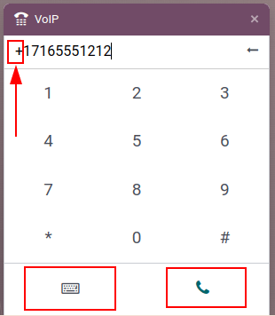

Hacer, recibir, transferir y desviar llamadas¶
En cualquier negocio es importante llamar a clientes potenciales, clientes o compañeros. Además, es necesario que una empresa esté disponible para atender las llamadas que reciben para que sus clientes confíen en su trabajo y para realizar conexiones.
Este documento incluye información sobre cómo hacer, recibir, transferir y desviar llamadas con la VoIP de Odoo.
Realizar llamadas¶
Es posible realizar una llamada desde el tablero de Odoo si abre el widget de teléfono ubicado en la esquina superior derecha, está representado por el icono ☎️ (teléfono).
Un usuario puede hacer clic en la pestaña Contactos y hacer clic en cualquier contacto en la base de datos para realizar una llamada.
Además, también puede utilizar la barra de búsqueda en la ventana emergente VoIP para encontrar cualquier contacto.

Para realizar una llamada de forma manual, haga clic en el icono ⌨️ (teclado) y luego escriba el número deseado. No olvide comenzar con el icono + (más) seguido del código internacional del país.
Example
El código de país para Estados Unidos y el icono + (más) sería +1. Si desea llamar a Bélgica, el número correspondería a +32 y en el caso de Gran Bretaña sería +44.
Después de escribir el número completo con el prefijo + (más) necesario y el código de país, haga clic en el icono verde 📞 (teléfono) para iniciar la llamada. Al finalizar, haga clic en el icono rojo 📞 (teléfono) para terminar la llamada.
Recibir llamadas¶
El widget VoIP se abre de forma automática al recibir una llamada en caso de que un usuario se encuentre usando la base de datos de Odoo. Si la base de datos está abierta en otra pestaña, entonces se reproducirá un sonido (el sonido debe estar activado en el dispositivo).
La pantalla del widget con el teléfono VoIP aparecerá una vez que regrese a la pestaña donde se encuentra la base de datos.
Haga clic en el icono 📞 (teléfono) para contestar la llamada o en el icono 📞 (teléfono) rojo para rechazarla.

Agregar a la cola de llamadas¶
El widget VoIP de Odoo le permite visualizar a todos los clientes y contactos que necesita llamar, estos se encuentran en la pestaña Siguientes actividades.

Para agregar una llamada a la pestaña Siguientes actividades haga clic en el icono verde 📞 (teléfono) mientras se encuentra en la vista de kanban de la aplicación CRM.
Para eliminarlas de la cola de llamadas, desplace el cursor sobre la oportunidad que tiene una llamada programada y haga clic en el icono rojo 📞 (teléfono) que aparece con el icono - (menos).
Una vez que regrese al widget del teléfono VoIP, solo aparecerán las llamadas que están programadas para ese día. Podrá encontrarlas en la cola de la pestaña Siguientes actividades del widget emergente de VoIP.

La pestaña Siguientes actividades del widget de teléfono VoIP está integrado con las aplicaciones CRM, Proyecto y Servicio de asistencia de Odoo.
En esas aplicaciones es posible agregar una llamada al chatter de los registros.
Haga clic en Actividades (ubicadas junto al icono 🕗 (reloj)) para agregar una llamada de forma manual desde el chatter. En Tipo de actividad, seleccione Llamada desde el menú desplegable.
Después, establezca una fecha límite y un resumen.
Por último, en el campo Asignado a establezca a la persona que debe realizar la llamada. Cualquier persona que seleccione en ese campo (Asignado a) verá esta llamada en su cola de llamadas que se encuentra en Próximas actividades en el widget de teléfono VoIP de Odoo.
Importante
Solo las llamadas del día inmediato (es decir, la fecha correspondiente a ese día) aparecen en la pestaña Siguientes actividades del widget de teléfono VoIP para ese usuario en particular.
If specified, haga clic en Guardar o en Abrir calendario para agendar la llamada y completar el proceso.
Transferir llamadas¶
Una llamada se puede transferir de un usuario a otro en el widget de teléfono VoIP de Odoo. Sin embargo, esto solo puede ocurrir después de hablar con la persona que llama. Sin contestar la llamada en el widget de teléfono VoIP de Odoo, la única manera de transferir una llamada de forma automática es a través de la consola o portal del proveedor.
Ver también
Consulte Pestaña de desvíos para obtener más información sobre la transferencia de llamadas.
Para transferir una llamada desde el widget de teléfono VoIP de Odoo, primero debe responder a la llamada con el icono verde 📞 (teléfono).
Una vez que haya respondido a la llamada entrante, haga clic en el icono ↔ (flecha doble). Después, agregue la extensión del usuario al que se debe reenviar la llamada y, por último, haga clic en Transferir para enviar la llamada a ese número telefónico.
Truco
Acérquese al administrador de la VoIP para conocer la extensión de un usuario. En caso de que el usuario tenga permisos de acceso a ajustes en Administración, vaya a .
Para obtener más información sobre los permisos de acceso, consulte Permisos de acceso.
Desviar llamadas¶
Para transferir una llamada desde el widget VoIP primero es necesario que responda a la llamada con el icono verde 📞 (teléfono). Una vez que haya contestado, presione el icono ↔ (flecha doble).
Después, escriba el número telefónico del usuario al que se debe reenviar la llamada y, por último, haga clic en Transferir.
Ver también
Consulte Pestaña de desvíos para obtener más información sobre el desvío de llamadas.